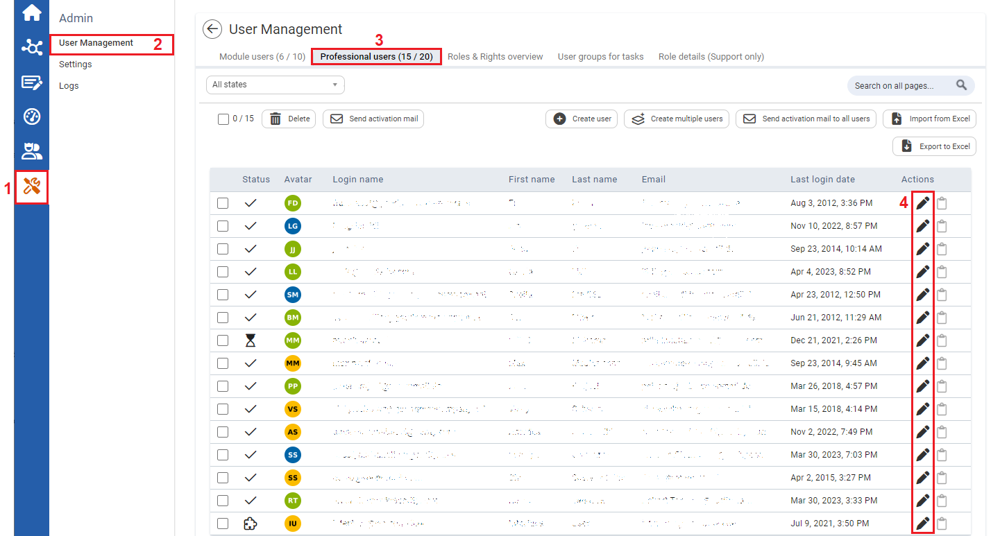
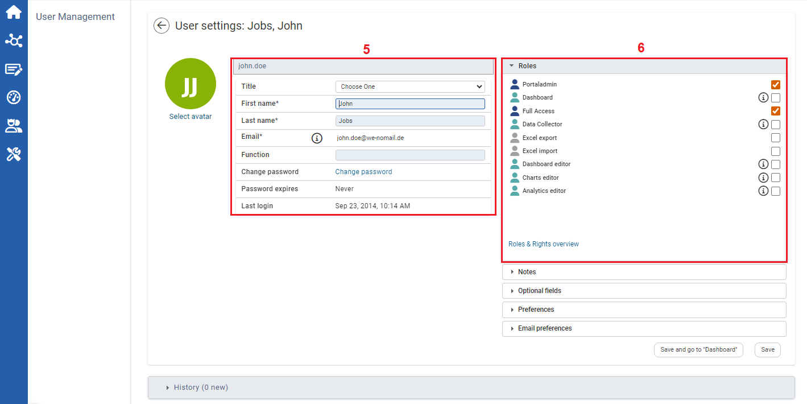

You can make the individual assignment of rights in two places: directly when creating the user or later in the editing mode. It is recommended to do this immediately when creating the user. The settings set here can be edited like all other data in the user profile if you have administrator rights.
There are different roles associated with different rights. Viewers can only view all modules and entered data, Data Collector can enter and change data, and Full Access Users can edit data and then approve it. Portal Admins have additional rights. Dashboard Editors, Analytics Editors, and Chart Editors are able to view and edit items in the three system modules.
To assign roles to users:

| 1 | On the Left navigational panel, click the Settings icon. |
| 2 | Click User Management. |
| 3 | Click the Professional users tab. |
| 4 | Click the Edit icon. The User Settings window opens. |

| 5 | The selected user’s personal data can be viewed and edited in this section. |
| 6 | The different role profiles are displayed here. By checking a Roles checkbox, the user gets the selected role of the areas in the system. |